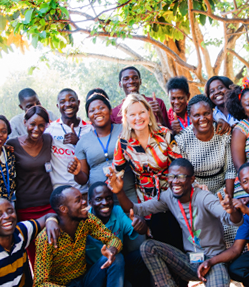
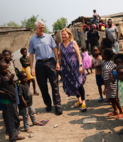
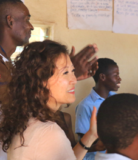
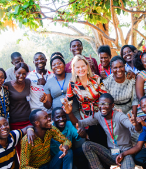
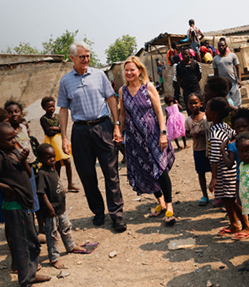
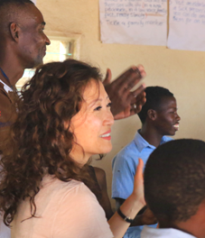

Have you ever wondered why some people hit a crisis in life and become angry and defeated while others hit a similar crisis and become kinder and stronger? I have. Over the course of my life, I have lived and worked in several low and middle-income countries doing faith-based service work. This has given me the opportunity to sometimes witness life at its very hardest. And though it’s not completely easy to understand, I have seen that joy often has very little to do with circumstances. Some of the people that surrounded me gave up when they were met with big challenges while others actually grew and thrived.
In 2013, I began a Masters of Applied Positive Psychology (MAPP) program at the University of Pennsylvania to pursue the scientific study of human flourishing and resilience. I was fascinated to learn that within social science research, there is a common language for 24 universal values called character strengths, and that training in these character strengths leads to increased well-being (viame.org). I was also encouraged to learn that the ability to bounce back after trauma is not something you are born with, but rather a learnable skill. This ability to make a comeback is really important--it protects against depression, lowers alcohol use and builds inner strength. What hope to find that resilience could be cultivated!
I thought about the world outside the four walls of my classroom--a world with people living in war-torn villages, refugee camps, and HIV clinics. How would they ever access what I was studying? It seemed unlikely that most of them would ever read a book about resilience, especially not one in English. A desire to help bridge the gap began to burn inside of me. I decided to create a culturally adaptable resilience-training curriculum that could be taught to anyone, regardless of reading ability or language skills.
Ideas began to flow, and I knew God was helping me.
It occurred to me that storytelling is a universal and time-tested method of teaching around the world and could be easily applied in character strength training. The Bible offered a wealth of stories with positive role models and had already been translated into 683 languages. I selected 24 Bible stories that aligned with the VIA character strengths and incorporated evidence-based exercises from the field of positive psychology.
I named the program Global Resilience Oral Workshops (GROW). My GROW capstone was posted to the University of Pennsylvania’s Scholarly Commons website in 2014. Since that time, it has been downloaded in over 100 countries worldwide. https://repository.upenn.edu/mapp_capstone/55/
As the downloads of the GROW capstone continued to roll in, I felt a pull to take the curriculum to the next level. I knew the program would need to be tested to see if it made a measurable difference in people’s lives, but I needed help figuring out how to move forward with a pilot.
My husband, Paul Seale, is a physician and research scientist in the field of substance misuse and addictions. Having supported me greatly throughout my graduate education, he now came alongside me to provide expertise and direction in figuring out how to test and measure the impact of the program.
Could we empower children with the gift of inner strength, hope, and resilience even if their personal circumstances were really challenging?
We were eager to test GROW in an international setting, and with adolescent depression at a crisis level around the world, we decided to target children ages 11-13.
As we considered another researcher to include as a co-investigator, our thoughts went to Dr. Sion Harris. We had coincidentally met Sion on an elevator several months prior and had learned that she was studying the impact of the character strength of forgiveness on alcohol use in adolescents. As an Associate Professor of Pediatrics at Harvard Medical School and co-director for the Center for Adolescent Substance Abuse Research at Boston Children’s Hospital, she was a perfect fit. We were thrilled when she accepted our invitation to join the core research team for the GROW project.
Project GROW © 2019